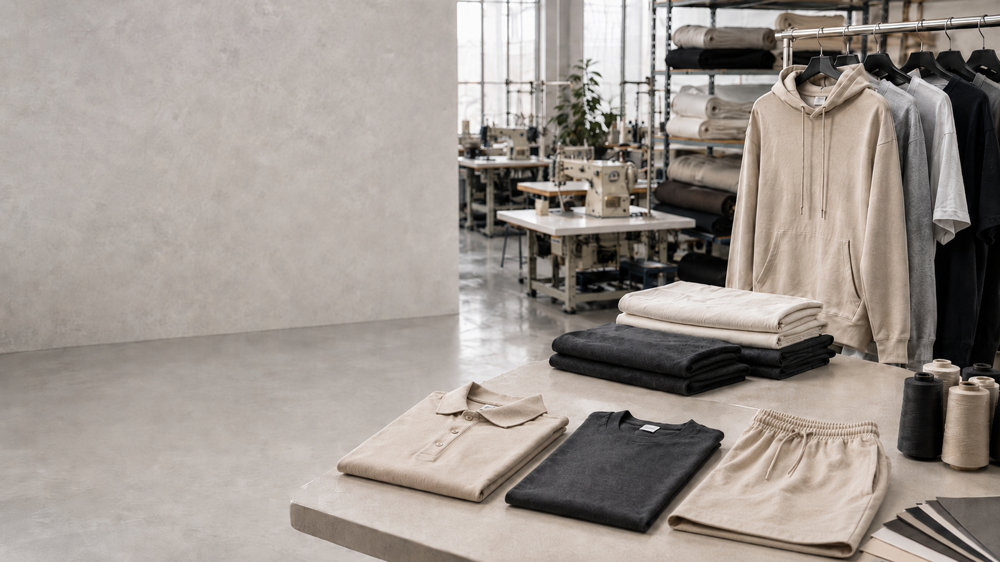

Kumaş Araştırması & Analizi
Kullanım amacı, gramaj, doku ve kalite odağında doğru seçim.
Perakende ile başlayan sektör birikimimizi bugün kumaş araştırmasından kalıp ve numuneye, üretimden etiket ve paketlemeye kadar uzanan uçtan uca üretim anlayışıyla sürdürüyoruz.

Perakende tekstil deneyiminden gelen ürün bilgisini, bugün kapsamlı bir üretim anlayışıyla birleştiriyoruz.
Doğru kumaştan son pakete kadar her adımı planlıyor; markaların fikirlerini üretilebilir, kaliteli ürünlere dönüştürüyoruz.
HakkımızdaBir ürünün fikir aşamasından paketlemeye kadar ihtiyaç duyduğu süreçleri tek noktadan yönetiyoruz.
Kullanım amacı, gramaj, doku ve kalite odağında doğru seçim.
Ürünün formuna ve hedef ölçülerine uygun geliştirme.
Seri üretim öncesi fiziksel ürün ve detay kontrolü.
Üretim planına uygun, hassas kumaş kesimi.
Ürün yapısına uygun, kontrollü üretim süreçleri.
Tasarıma göre kişiselleştirme seçenekleri.
Marka kimliğini tamamlayan tüm ürün detayları.
Üretim sonrası sistemli ürün kontrolleri.
Ürünü satışa ve sevkiyata hazır hale getirme.
Kumaş seçiminden kalıp geliştirmeye, etiket ve aksesuardan ambalaja kadar markanıza özel üretim süreçlerini birlikte planlıyoruz.
Özel Üretimi KeşfedinKumaşın karakteri, kalıbın dengesi, dikişin temizliği ve aksesuarların doğru seçimi ürünün bütününü belirler. Her detayı birbiriyle uyumlu, kontrollü bir üretim sisteminin parçası olarak ele alıyoruz.
Ürün fikrinizi veya örnek ürününüzü paylaşın, üretim sürecini birlikte planlayalım.